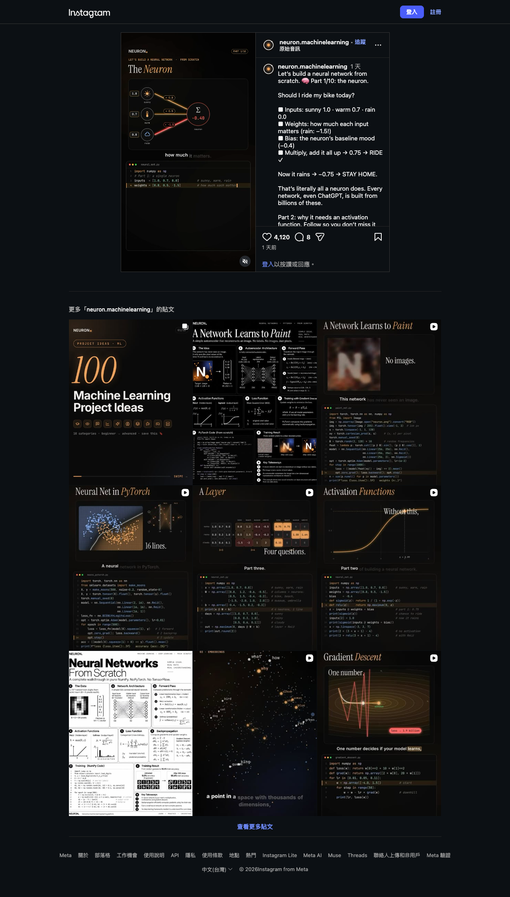

Instagram｜從「今天騎不騎車」理解單一神經元：輸入、權重、偏差與加權和
一句話摘要
這支 45 秒 Reel 用天氣條件示範神經元最核心的數學：把每個輸入乘以對應權重、全部加總後加上偏差。這是理解深度學習的正確起點；不過影片中的 `RIDE` 是教學性的決策標籤，真實模型是否輸出機率、分數或分類，還取決於後續 activation、任務設計與訓練資料。
Reel 可見內容：單一 neuron 的三個步驟
Instagram 帳號 `neuron.machinelearning` 的這支 Reel 長度為 45 秒。擷取時頁面顯示 4,120 個讚與 8 則留言，發佈日為 2026-10-09。貼文題為「Let’s build a neural network from scratch. Part 1/10: the neuron.」，本次採樣約第 5、19、34 秒，屬畫面式證據而非完整逐字稿。
- 約第 5 秒：畫面以 `sunny`、`warm`、`rain` 作為輸入，主標題為 `The Neuron`，並顯示 `neural_net.py` 的程式編輯器。
- 約第 19 秒：畫面列出 inputs `[1.0, 0.7, 0.8]` 與 weights `[0.8, 0.5, -1.5]`。三條連線分別乘上權重後匯入加總節點；雨的負權重以紅色表示。這一幕的輸入 rain 為 0.8，因此加權和為 -0.40。
- 約第 34 秒：畫面改為 inputs `[1.0, 0.7, 0.0]`，加上 bias `-0.4`，寫出 `z = Σᵢ wᵢxᵢ + b`，計算結果為 `0.75`，並以綠色 `RIDE` 作為示意輸出。終端機同時顯示逐項迴圈與 `np.dot(inputs, weights) + bias` 兩種寫法；後者輸出 `0.7499999999999999` 是浮點數表示的正常現象。

影片範例如何算出 0.75
影片後段可見的數值是：
- sunny：1.0，權重 0.8
- warm：0.7，權重 0.5
- rain：0.0，權重 -1.5
- bias：-0.4
因此：
`z = (1.0 × 0.8) + (0.7 × 0.5) + (0.0 × -1.5) - 0.4 = 0.75`
直覺上，晴朗和溫暖對「騎車」分數有正向貢獻；雨的權重為負，但當 rain 輸入為 0 時不會扣分。若把 rain 改成 0.8，則 `z = -0.4`，這正是約第 19 秒畫面中加總節點所示的數值。
正確補充：加權和與 activation 不是同一件事
影片貼文預告下一集會談 activation function。這個區分很重要：
- `z = Σ wᵢxᵢ + b` 是仿射轉換或前激活值。它把特徵依可學習的權重重新組合。
- activation function 才負責引入非線性，例如 ReLU、sigmoid 或 tanh；沒有非線性時，多層線性轉換可合併為單一線性轉換，無法表達更複雜的關係。
- `RIDE` 不是由 0.75 自然唯一決定。實務上可能設定閾值，也可能先用 sigmoid 轉為二元機率、或將多個輸出送入 softmax。閾值、輸出層與損失函數要隨任務定義。
TensorFlow Keras 的 Dense layer 官方文件也將核心計算描述為 `activation(dot(input, kernel) + bias)`。這和 Reel 的單一神經元範例對應，但官方介面處理的是向量／批次張量，不僅是三個手填數值。
為什麼值得收進 AI 學習雷達
- 用非常小的數字把常被術語包裝的神經元拆回可驗算的算式。
- 畫面同時展示逐項相乘加總與 `np.dot`，適合當作 Python/Numpy 入門的對照。
- 也提醒一個關鍵邊界：一個神經元的加權和是元件層概念；大型語言模型由大量參數、層、注意力機制、訓練目標與資料共同決定，不能只把它簡化成單一 if/else 規則。
小練習
把 `rain` 從 0.0 改成 0.8，先手算再用程式確認。接著嘗試加入一個 activation，例如 sigmoid，觀察同一個加權和如何變成 0 到 1 的數值。注意：這只是在理解機制，不是可直接用於安全或重大決策的模型。
原始連結
Instagram Reel：
https://www.instagram.com/neuron.machinelearning/reel/DeRNXXMoH--/
TensorFlow Keras Dense 官方文件：
https://www.tensorflow.org/api_docs/python/tf/keras/layers/Dense